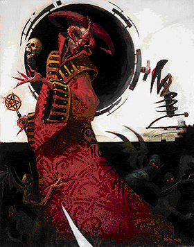

最终狱领主：阿斯摩蒂而斯（Asmodeus，Lord of the Ninth）
大型异界生物（守序，邪恶）
生命骰数：35d8+350（507）
先攻权调整：+10
速度：40尺；飞行120尺（完美）
防护等级：49（-1体形，+6敏捷，+9洞察，+25天生防护等级），接触24，措手不及43
攻击：+55/+50/+45/+40（近战，阿斯摩蒂而斯的红宝石节杖[邪恶巨型棍棒+6，+6 Unholy Great Club]）
伤害：1d8+28附带“造成重伤”4d8+20（阿斯摩蒂而斯的红宝石节杖）
面宽/触及：5×5尺/10尺
特殊攻击：寒战凝视，强制驱役，虚弱恐惧凝视，类法术能力，法术
特性：巴兹魔特性，伤害减免20/+7，异界生物特性，自疗15，法术抗力45，召唤巴兹魔
豁免：强韧+29，反射+25，意志+31
属性：力量40，敏捷23，体质 30，智力 30，感知 34，魅力 30
技能：炼金+45，估价+26，唬骗+45，专注+45，交涉+53，易容+45，收集情报+45，躲藏+19，暗语沟通+47，威吓+49，知识（神秘）+45，知识（自然）+18，知识（宗教）+26，知识（位面）+45，聆听+47，潜行+23，探知+45，搜索+45，观言察色+47，法术辨识 +45，侦察+47
特技：战斗反射，制造令牌，黑暗圣言，寓守于攻，精通先攻，类法术能力极效，强力攻击，法术穿透，秽恶类法术能力
气候/地形：任意
组织：独行
挑战等级：32
宝物：四倍标准
阵营：守序邪恶
进化：无
阿斯摩蒂而斯，最高位的魔鬼领主，九层地狱无可置疑的统治者，即使是那些以巴托为家的神祉也要让他三分。阿斯摩蒂而斯是现存最古老的魔鬼，虽然有些人宣称，他并不是巴托地狱的第一位统治者，不过同时也有一些人认为他就是整个多元宇宙间最古老，最重要的邪恶力量。
阿斯摩蒂而斯的行事对外人而言更像是个迷。大部分生物的眼光都过于狭窄，智力水平更是无法理解最终狱领主那复杂而险恶的阴谋。阿斯摩蒂而斯雄于大略，但也会在必要时把注意力转移到凡人身上。而在最近一次的大清算（Reckoning）中，阿斯摩蒂而斯又得到了显示自己实力的机会，就算是所有其他魔鬼领主一起发起挑战，仍然无法动他分毫。他个人的意志就可以决定各位领主的更迭。每年，其他领主都会集结在奈瑟斯（Nassus）的马尔谢姆堡（Malsheem），从未有人敢于拒绝阿斯摩蒂而斯的召唤，甚至莱维思图斯（Levistus）也会从那无尽的监禁中获得短暂的自由，带着怒气出席。
阿斯摩蒂而斯直立时大约13尺高，皮肤和头发呈黯色。对那些喜欢电闪雷鸣的人而言，他甚至可以说是相当英俊。他的瞳孔中闪烁着地狱的血色，头上还生长着一小对黯红色小角。阿斯摩蒂而斯衣着华丽，色调以红黑为主，仅仅一件衣服就相当于哪个凡尘国度全年的花销。当然，他也总是随身携带着那根红宝石权杖，上面镶嵌着无数华丽的宝石～当然也蕴涵着强大的魔法力量。
战斗：
若阿斯摩蒂而斯被迫卷入战斗（这属于相当罕见的情况），则主要依赖红宝石权杖的强大力量。不过在通常情况下，他只需要用自己的力量就可以逼迫敌人逃跑甚至投降。若这种战术不成功，阿斯摩蒂而斯倾向于选择“战略性调整”，并让自己的手下消耗敌人的力量。
寒战凝视（SU）：阿斯摩蒂而斯的寒战凝视（意志检定DC 37，忽略）范围30尺，效果如同“缓慢术”（施法者等级20）。同时，豁免失败的目标在未来24小时内，攻击骰，伤害骰，豁免骰，属性检定骰以及技能检定骰上必须承受-5的惩罚。
虚弱恐惧凝视（SU）：阿斯摩蒂而斯的虚弱恐惧凝视（意志检定DC 37，忽略）范围60尺，效果如同“恐惧术”（施法者等级20）。同时，豁免失败的目标还需要承受1d4点力量伤害。阿斯摩蒂而斯在每一轮内可以任意选择使用虚弱恐惧凝视或是寒战凝视（但不能同时使用两种凝视攻击）。
强制驱役（SU）：每轮内，阿斯摩蒂而斯都可以选择使用一个标准动作强制一名可以听懂他话语的单体目标进行意志检定（DC 37）。若目标在检定中失败，则在未来10d10天内对阿斯摩蒂而斯惟命是从，效果类似“暗示术”。若目标成功进行了意志检定，则终生对此效果免疫。
类法术能力：随意施展操纵死尸，渎神之语，媚惑怪物，唤起高级死灵，亵渎术，侦测魔法，魔鬼荣耀（Devil’s Ego），感知位置，支配动物，下界疾速（Fiendish Quickening），指使术，高等解除魔法，地狱火（Hellfire），地狱火风暴（Hellfire storm），反善良法阵，高等幻影，群体媚惑（Mass Charm），投影术，复原术，复生术，暗示术，无错传送术，真知术（效果如牧师），邪恶灵光，邪影击，邪居，冰墙术，卑劣邪影击（Wretched Blight）。每日一次施展流行暴，律令（任意），完全复生术，许愿术。施法者等级20，豁免DC 20+法术等级。
法术：阿斯摩蒂而斯可以如一名20级牧师施展神术，相关领域为魔鬼和邪恶，因此1级至9级魔法各获得1个额外法术栏位。同时，阿斯摩蒂而斯也如同一名牧师拥有神赋能力。
通常法术（6/9/9/9/9/8/7/7/7/6；豁免DC 22+法术等级）：0级，治疗微伤，神导术，灭光术（No Light），提升抗力(2)，损伤舌尖（Slash Tongue）；1级，治疗轻伤(2)，观命术，侦测混乱，侦测善良，魔鬼之尾（Devil’s Tail）*，心脏疼痛（Heartache），延缓疾病（Suspend Disease），虔诚护盾；2级，骨折术（Boneblast），治疗中度伤害(2)，亵渎术*，次级复原术(2)，移除麻痹，活力流失（Sap Strength），肢体枯萎（Wither Limb）；3级，治疗重伤，深幽黑暗术，魔鬼荣耀（Devil’s Ego）*，防护负能量，防护能量伤害（音波），移除诅咒，虐待成性（Sadism），死者交谈，破坏身体（Wrack）；4级，治疗致命伤害，次元锚，辨知谎言，地狱火*，地狱之力（Hell’s Power），追查犯人（Identify Transgressor），复原术，短讯术，心脏骤停（Stop Heart）；5级，破除结界，反制混乱，反制善良*，炎击术(2)，摄取心脏（Heartclutch），正义烙印，道德沦丧（Morality Undone）；6级，防活物护罩，剑刃障壁（Blade Barrier），同游灵界，重伤术，医疗术，异界誓缚*，千针穿刺（Thousand Needles）；7级，强力降咒术（Bestow Greater Curse），灰飞烟灭，律言，高等探知术(2)，地狱火风暴*，囚困灵魂（Imprison Soul）；8级，短讯暗示*，地震术，火焰风暴(2)，群体医疗术(2)，秩序护盾；9级，掠取术（Despoil），吸能术，异界之门*，内爆术，禁锢灵魂（Soul Bind），复仇风暴。
*领域法术
领域：魔鬼（唬骗，交涉，威吓，观言察色时骰数+6，每日一次），邪恶（在施展邪恶法术时，施法者等级获得+1的奖励）
巴兹魔特性：阿斯摩蒂而斯可以用心灵感应于100尺内任何有语言的生物交谈。他可以在任何黑暗中视物，包括由“深幽黑暗术”制造的黑暗。阿斯摩蒂而斯对火焰伤害和毒物免疫，对酸液和寒冷有20的伤害减免。
异界生物特性：阿斯摩蒂而斯不能被更复或是复活。
自疗（EX）：+4附魔等级或以上的神圣武器可以对阿斯摩蒂而斯造成正常伤害。
召唤巴兹魔（SP）：阿斯摩蒂而斯可以随意召唤1名深狱炼魔或是2名其他种类的魔鬼。
个人财产：阿斯摩蒂而斯随身携带有“阿斯摩蒂而斯的红宝石权杖”，视为邪恶大木棒+6，被红宝石权杖接触到的目标还必须承受造成致命伤害的效果（施法者等级20）。对红宝石权杖的具体介绍，请见本书第六章有关神器的说明。
阿斯摩蒂而斯的目标：
阿斯摩蒂而斯首要的目标就是稳固自己在九层地狱的统治和地位。他同时也致力于在整个多元宇宙中散布邪恶，因此常常和天界以及善良神祉发生冲突。当然，阿斯摩蒂而斯也相当厌恶无底深渊中的恶魔～他们的存在对魔鬼而言是最大的挑战。
阿斯摩蒂而斯的信徒
敬拜魔鬼的人们基本上都是在追随阿斯摩蒂而斯。最终狱领主的信徒数量庞大，也许比其他地狱领主追随者的总和还要众多。许多类人生物和邪恶生物都崇拜阿斯摩蒂而斯，认为他是力量和威势的守护神。在这些信徒眼中，追随阿斯摩蒂而斯就意味着获得无尽的力量。
阿斯摩蒂而斯的神殿通常秘密建造在城市之中或是潜伏在城市地表以下，神殿中当然到处悬挂刻画着紧握骷髅头手爪，红宝石权杖，以及倒置的五芒星。祭拜阿斯摩蒂而斯的牧师强硬蛮横，但同时又拥有相当的个人魅力和政治影响，他们通常财力雄厚，因此神殿中也总是戒备森严。
阿斯摩蒂而斯偏好的武器是钉头锤，相关的牧师领域为魔鬼，邪恶以及秩序。
信徒：吉利亚德·蒂罗森是阿斯摩蒂而斯信徒中的典型：有名，有权，有钱。他和许多富有的贵族或是商人一起，白天扮演着自己在上流社会中的角色，晚上则凑在一起祭祀最终地狱那令人恐怖的主人。
吉利亚德·蒂罗森
男性人类，贵族6级/牧师10级/阿斯摩蒂而斯的信徒4级
挑战等级：20
中型类人生物
生命骰数：6d8+6+10d8+10+4d6+4（105）
先攻权加值：+3
速度：30尺
防护等级：30，接触13，措手不及27
攻击：+16/+11/+6（近战，1d8+2附带1d6点火焰伤害/19-20，领主之力令牌[Rod of Lordly Might，火焰长剑效果启动]），或者+19/+14/+9（近战，1d8+5/×3，领主之力令牌[战斧效果启动]）
特殊攻击：呵斥死灵×10每日，类法术能力
特性：禁断知识每周2次，召唤地狱猫
阵营：守序邪恶
豁免：强韧+11，反射+9，意志+23
属性：力量 12，敏捷 17，体质 13，智力 13，感知 21，魅力 25
技能：炼金+5，唬骗+19，专注+9，交涉+21，躲藏+1，暗语沟通+18，威吓+18，知识（神秘）+12，知识（宗教）+13，聆听+14，读唇+8，观言察色+9，法术辨识+12
特技：黑暗信徒（Disciple of Darkness），闪避，邪恶烙印（Evil Brand），钢铁意志，领导，邪恶法术专攻，毒物免疫（厄撒依克，Urthanyk），抄录卷轴
类法术能力：每日一次施展媚惑人类以及命令术。施法者等级12，豁免DC 17+法术等级。
禁断知识（EX）：每周两次，吉利亚德可以通过欺骗，谎言甚至是威胁，在进行收集信息检定时得到+10的奖励，本能力可以使他得到一般人无法获取的知识。
召唤地狱猫（SP）：每日一次，吉利亚德可以召唤一只地狱猫。如同施展“召唤怪物术”，施法者等级12。
通常法术（6/8/6/6/5/5/3；豁免DC 15+法术等级）：0级，治疗微伤，侦测魔法，侦测毒性，器官保鲜（Preserve Organ），阅读魔法，提升抗力；1级，祝福术，治疗轻伤(2)，魔鬼之尾（Devil’s tail）*，神恩术，虔诚护盾，悲哀术（Sorrow），拜尔泽布巧舌（Tongue of Baalzebul）；2级，蛮力术，魔鬼之眼（Devil’s Eye）*，人类定身术，沉默术，灵能武器，四肢枯萎（Wither Limb）；3级，治疗重伤，魔鬼荣耀（Devil’s Ego）*，解除魔法，受疟成性（Masochism），虐待成性（Sadism），破坏身体（Wrack）；4级，治疗致命伤害，地狱火*，毒击，区域毒击（Poison Area），法术免疫；5级，反制善良*，炎击术(2)，道德沦丧（Morality Undone），杀生术，真知术；6级，唤起死灵*，医疗术，回返真言
*领域法术
领域：魔鬼（唬骗，交涉，威吓，观言察色时骰数+6，每日一次），邪恶（在施展邪恶法术时，施法者等级获得+1的奖励）
个人财产：领主之力令牌（Rod of Lordly Might），魅力披风+6（Cloak of Charisma +6），黑暗灵魂胸甲+4（+4 Darksoul Breastplate），法术抗力大钢盾+4（法术抗力15，+4 Spell Resistance Large Steel Shield），天然防护项链+2（Amulet of Natural Armor +2），力量珍珠（5级，Pearl of Power），力场盒（Cube of Force），飞行药水（Potion of Fly），深幽黑暗术卷轴，重伤术卷轴，掠取术卷轴，3剂厄撒依克毒药（Urthanyk Poison），2剂蓝蘑粉。
阿斯摩蒂而斯的手下
从字面上讲，所有魔鬼都是阿斯摩蒂而斯的手下。不过阿斯摩蒂而斯当然也有自己专属的仆人。六名哈玛魔凡人猎手在主物质位面活动，充当阿斯摩蒂而斯的代理人，号称星火猎人（Spark Hunters）。
歌拉西亚（Glasya）是阿斯摩蒂而斯和被莱维思图斯杀死的毕索泽雅（Bensozia，这也是为什么莱维思图斯被关在冰牢之中）所生下的女儿。歌拉西亚最初陪在马曼身旁，但是，由于她丰富的想象力为各位魔鬼领主（也包括她的爹爹）带来了数不清的麻烦，因此马曼现在又把她交回给阿斯摩蒂而斯。不过对于这位麻烦女儿而言，现在的生活应该说是相当无聊。歌拉西亚站立时大约9尺高，有着蝙蝠状的翅膀，古铜色的皮肤，娇小的犄角，尖俏的尾巴，性感异常。
马提尼特（Martinet）是阿斯摩蒂而斯的喉舌，负责替最终狱领主打点事务，尤其是处理各位领主之间的微妙关系。如果九层地狱里哪两位老大未经阿斯摩蒂而斯授权就开始干架，马提尼特便会出面制止这种行动。因此，虽然马提尼特在诸位魔鬼领主面前根本谈不上强大，但人人都尊敬他，人人都知道他背后站着阿斯摩蒂而斯。不管是威胁还是利诱，言语很难打动这位魔鬼，而他在回击和反驳上有着相当出色的技巧。
星火猎人（6）
高等哈玛魔（Advanced Hamatula），1级巡林客/10凡人猎手
挑战等级：22
大型异界生物（守序，邪恶）
生命骰：21d8+84+1d10+4+10d10+40（287）
先攻权加值：+0
速度：30尺
防护等级：31，接触11，措手不及31
攻击：+32（近战，2d8+7，利爪×2）
面宽/触及：5×5尺/10尺
特殊攻击：恐惧氛围，穿刺，精通擒抱，凡人狮子吼，屠戮凡人，打击凡人每日1次，类法术能力
特性：巴兹魔特性，强力魔爪，侦测凡人，伤害减免10/+1，宿敌（人类+1），猎杀凡人+4，凡人皮革（任意），异界生物特性，阻碍凡尘魔法，法术抗力27，召唤巴兹魔
阵营：守序邪恶
豁免：强韧+22，反射+18，意志+20
属性：力量 25，敏捷 10，体质 18，智力 13，感知 14，魅力 16
技能：攀爬+23，专注+28，交涉+7，躲藏+30，聆听+38，潜行+24，搜索+34，观言察色+36，侦察+38
特技：警觉，顺劈砍，战斗施法，黑暗信徒，寓守于攻，精通卸除武器，仇恨凡人，强力攻击，类法术能力瞬发，追踪
恐惧（SU）：被星火猎人击中的目标必须进行意志检定（DC 23），失败将承受如同法术“恐惧术”的效果（施法者等级 9）。无论目标的检定是否成功，在24小时内不会再次被哈玛魔的恐惧能力影响。
穿刺（EX）：当星火猎人成功进行擒抱后，可以立即对目标造成3d8+10点伤害。
精通擒抱（EX）：星火猎人击中中等体形或以下的目标后，可以在造成正常伤害的同时尝试以一个自由动作进行擒抱，并且不会引发借机攻击（擒抱奖励+32）。若星火猎人是通过利爪攻击开始擒抱，则在同一轮内还可以附加穿刺伤害。星火猎人也可以选择以正常方式展开擒抱，或用利爪握住目标（擒抱奖励-20，但不视为正在进行擒抱）。在任何一种情况下，成功擒抱的当轮，目标都必须承受利爪伤害。
凡人狮子吼（SU）：每日一次，星火猎人可以施展凡人狮子吼，附近50尺内的所有凡人必须进行坚韧检定（DC 23），失败将震慑1轮。
屠戮凡人（SU）：每日一次，星火猎人可以通过接触攻击直接杀死凡人。若星火猎人成功进行了近战接触，目标（必须为凡人）必须进行坚韧检定（DC 23），失败将直接死亡。
打击凡人（SU）：每日一次，星火猎人可以尝试在普通进程攻击中附加打击凡人。星火猎人在攻击骰上获得+2的奖励，并且在伤害骰上获得+20的奖励。若星火猎人误将此能力施展在非凡人的生物上，则不产生任何效果，并消耗掉当日所能施展的“打击凡人”。
类法术能力：随意施展操纵死尸，媚惑人类，亵渎术，丧志术，人类定身术，高等幻影，燃火术，烟火术以及暗示术。每日一次施展秩序之怒或者邪影击。施法者等级9，豁免DC 13+法术等级。
巴兹魔特性：星火猎人可以用心灵感应于100尺内任何有语言的生物交谈，并且可以在任何黑暗中视物，包括由“深幽黑暗术”制造的黑暗。同时，星火猎人对火焰和毒物伤害免疫，对酸液和寒冷有20的伤害减免。
强力魔爪（EX）：星火猎人的利爪攻击可以造成2d8+7点伤害。
侦测凡人（SU）：星火猎人可以随意侦测凡人。本能力效果与“侦测死灵”类似，但侦测对象为凡人。
宿敌/猎杀凡人（EX）：心火猎人·星火猎人对抗凡人时在攻击骰，伤害骰，以及唬骗，聆听，观言察色，侦察以及野外生存检定上获得+4的调整，另外若目标为人类，则奖励提升至+5。使用远程攻击时，只有30尺内的目标能附加本奖励（星火猎人在更远的距离不能精确瞄准）。同样，本伤害奖励不能附加在对重击免疫的生物上。
凡人皮革（SU）：星火猎人只需要一小块凡人的皮肤，就可以通过魔法手段变形自己（如同施展法术“变形自己”），变形目标为任意凡间生物。若皮肤由特定个体身上取得，并且星火猎人变形的目标也是此特定个体，则持续时间为永久。若皮肤的种类和星火猎人变形的目标相同，则持续时间为1小时。若皮肤的种类和星火猎人变形的目标不同，则持续时间为10分钟。星火猎人可以通过一个标准动作取消变形，本能力在其他方面上有如法术“变形自己”。
异界生物特性：星火猎人不能被更复或是复活。
阻碍凡尘魔法（SU）：星火猎人在对抗凡人施展的法术或类法术能力时，豁免骰可以获得+2的奖励。
召唤巴兹魔（SP）：星火猎人可以每日一次召唤2d10名劣魔（成功率50%）或1名哈玛魔（成功率35%）。
所知法术（3/3/3/1；豁免DC 13+法术等级）：1级，惊恐术，媚惑人类，侦测善良，心脏疼痛（Heartache），防护善良，睡眠术，胆怯凝视；2级：侦测思想，邪恶凝视（Evil Eye），人类定身术，防护善良法阵，识破隐形，蛛网术，四肢枯萎（Wither Limb）；3级，皮开肉绽（Flesh Ripper），镜中虚像（Mirror Sending），回避侦测，探知术，暗示术，秽恶长枪（Vile Lance），凌虐术（Wrack）；4级，秘法眼，攫屈魔群召唤术（Call Dretch Horde），生物定位术，道德败落（Morality Undone），魅影杀手，反震抗力（Resonating Resistence）
个人财产：防护护腕+6（Bracers of Armor +6），防护戒指+2（Ring of Protection +2），剧毒项圈（Collar of Virulent Venom，附加在利爪和穿刺攻击上），蔑视之血肉戒指（Flesh Ring of Scorn），抗力回振卷轴（Scroll of Resonating Resistance）
歌拉西亚
女性独一魔鬼
挑战等级：18
大型异界生物（守序，邪恶）
生命骰：18d8+90（171）
先攻权加值：+14
速度：40尺；飞行60尺（普通）
防护等级：34，接触19，措手不及24
攻击：+26/+26/+21/+16/+11（近战，1d6+9附带魔鬼血毒[Devil Blood Poison]/19-20，高速短剑+3[+3 Speed Short Sword]）
面宽/触及：5×5尺/10尺
特殊攻击：类法术能力
特性：巴兹魔特性，伤害减免30/+3，异界生物特性，自疗5，法术抗力28，召唤巴兹魔
阵营：守序邪恶
豁免：强韧+16，反射+21，意志+16
属性：力量 23，敏捷 30，体质 21，智力 20，感知 20，魅力 26
技能：唬骗+29，专注+25，交涉+30，易容+28，躲藏+27，暗语沟通+25，威吓+20，方向感+15，知识（神秘）+15，知识（皇室贵族） +15，知识（宗教）+13，知识（界域）+9，聆听+17，潜行+30，搜索+15，法术辨识+18，侦察+14
特技：警觉，强化类法术能力，闪避，寓守于攻，精通先攻
类法术能力：随意施展操纵死尸，渎神之语，媚惑怪物，唤起死灵，亵渎术，侦测善良，侦测魔法，解除魔法，人类定身术，高等隐形，反善良法阵，高等幻影，燃火术，变形自己，烟火术，暗示术，无错传送术（自身以及50磅物品），真知术，邪恶灵光，邪居，火墙术；每日一次施展死亡一指，有限许愿术，魔法徽记（任意）。施法者等级20；豁免DC 18+法术等级。
巴兹魔特性：歌拉西亚可以用心灵感应于100尺内任何有语言的生物交谈，并且可以在任何黑暗中视物，包括由“深幽黑暗术”制造的黑暗。同时，歌拉西亚对火焰和毒物伤害免疫，对酸液和寒冷有20的伤害减免。
异界生物特性：歌拉西亚不能被更复或是复活。
自疗（EX）：+3附魔等级或以上的神圣武器可以对歌拉西亚造成正常伤害。
召唤巴兹魔（特殊能力）：歌拉西亚可以每日三次自动召唤1d4名厄瑞尼斯女妖或1名深狱炼魔（成功率75%）。
个人财产：涂有魔鬼血毒（Devil Blood Poison）的高速短剑+3（+3 Speed Short Sword）。
马提尼特
男性独一魔鬼
挑战等级：13
大型异界生物（守序，邪恶）
生命骰：16d8+80（152）
先攻权加值：+9
速度：40尺；飞行60尺（普通）
防护等级：29，接触14，措手不及24
攻击：+25/+20/+15/+10（近战，1d6+13，麻痹手杖+3[+3 Quarterstaff of Paralysis]）
面宽/触及：5×5尺/10尺
特殊攻击：类法术能力
特性：巴兹魔特性，伤害减免30/+3，异界生物特性，自疗5，法术抗力24，召唤巴兹魔
阵营：守序邪恶
豁免：强韧+15，反射+15，意志+17
属性：力量 24，敏捷 20，体质 20，智力 19，感知 20，魅力 23
技能：唬骗+25，专注+15，交涉+29，收集情报+12，躲藏+1，暗语沟通+26，威吓+8，知识（神秘）+12，知识（历史）+14，知识（地方）+14，知识（皇室贵族）+23，知识（界域）+13，聆听+15，搜索+9，观言察色+24，法术辨识+19，侦察+19
特技：黑暗圣言，闪避，寓守于攻，精通先攻，钢铁意志
类法术能力：随意施展操纵死尸，渎神之语，媚惑怪物，唤起死灵，亵渎术，侦测善良，侦测魔法，解除魔法，感知位置，人类定身术，高等隐形，反善良法阵，高等幻影，燃火术，变形自己，烟火术，暗示术，无错传送术（自身以及50磅物品），真知术，邪恶灵光，邪居；每日一次施展弱智术，有限许愿术。施法者等级 17；豁免DC 16+法术等级。
巴兹魔特性：马提尼特可以用心灵感应于100尺内任何有语言的生物交谈，并且可以在任何黑暗中视物，包括由“深幽黑暗术”制造的黑暗。同时，马提尼特对火焰和毒物伤害免疫，对酸液和寒冷有20的伤害减免。
异界生物特性：马提尼特不能被更复或是复活。
自疗（EX）：+3附魔等级或以上的神圣武器可以对马提尼特造成正常伤害。
召唤巴兹魔（特殊能力）：马提尼特每轮可以自动召唤1名守序邪恶的火魔蝠或是小魔鬼（用于充当信史），另外，马提尼特每日还可以尝试召唤1名深狱炼魔（成功率55%）。
个人财产：麻痹手杖+3（+3 Quarterstaff of Paralysis，接触可以造成如同“人类定身术”的效果，意志豁免DC 13，忽略）。